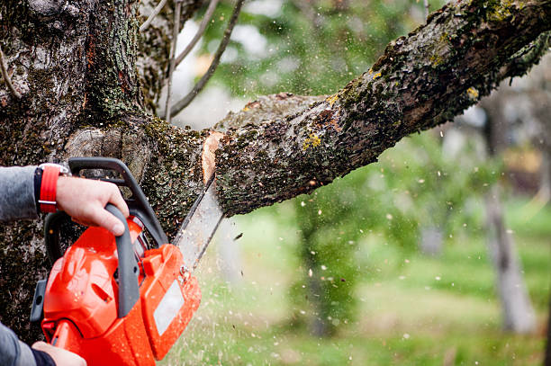

La deforestación resultante de la tala inmoderada conduce a la fragmentación y destrucción de hábitats, lo que pone en peligro a numerosas especies de flora y fauna. Muchas especies endémicas se enfrentan a la extinción debido a la pérdida de su entorno natural. La pérdida de biodiversidad puede tener graves consecuencias para los ecosistemas y la sociedad en general.
